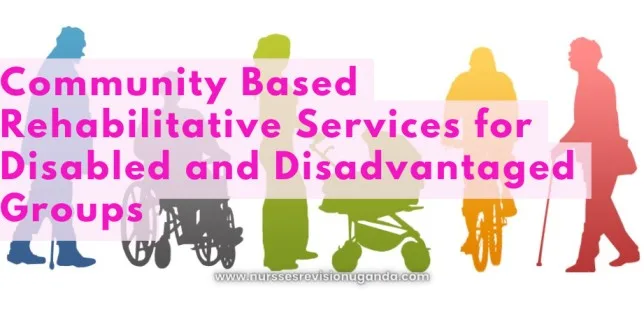

Expanded Nursing Uganda Explanation
disadvantaged groups should be understood beyond a short definition. Link the concept to patient history, focused assessment, common risks, nursing priorities, documentation and evaluation of outcomes.
01 CBRS For Disabled and Disadvantaged Groups
Community-based rehabilitation is an approach to rehabilitation that emphasizes the integration of people with disabilities into their local communities.
CBRS programs are designed to provide a range of services that improve health outcomes, increase social participation, and enhance quality of life. The services are typically provided by trained professionals in a variety of settings, including clinics, schools, and community centers.
02 Importance of CBRS
Community-based rehabilitative services (CBRS) play a crucial role in supporting disabled and disadvantaged individuals who face various obstacles in accessing essential healthcare, education, and employment opportunities. These services are essential as they contribute to the overall well-being and quality of life of individuals in several significant ways.
- Accessibility : CBRS focus on delivering services within local communities, making them more accessible to those who may have difficulty traveling or reaching specialized facilities. By bringing rehabilitative services closer to individuals in need, CBRS ensure that crucial support is available to them without the added burden of long-distance travel or transportation issues.
- Comprehensive Care : Community-based rehabilitative services offer a holistic approach to rehabilitation by addressing not only physical impairments but also emotional, psychological, and social aspects. They provide a range of interventions, including therapy, counseling, assistive devices, and skill-building programs, tailored to meet the diverse needs of individuals.
- Social Inclusion: CBRS promote social inclusion by facilitating the active participation and integration of disabled and disadvantaged individuals into their communities. Through community engagement initiatives, these services encourage the formation of social connections, friendships, and support networks, reducing the risk of social isolation and fostering a sense of belonging.
- Empowerment : By providing individuals with the tools, resources, and skills necessary to overcome barriers, CBRS empower them to take control of their lives and achieve their goals. These services focus on enhancing self-confidence, independence, and self-advocacy, enabling individuals to actively participate in decision-making processes and become agents of change in their communities.
- Preventative Approach : Community-based rehabilitative services emphasize early intervention and prevention, aiming to address disabilities and disadvantages at an early stage. By identifying potential challenges and providing timely support, CBRS can prevent further deterioration of health, reduce the need for more extensive interventions, and enhance long-term outcomes for individuals.
- Cost-Effectiveness : CBRS can be more cost-effective compared to institutionalized or centralized services. By utilizing local resources, collaborating with community organizations, and leveraging existing infrastructure, these services optimize the utilization of available resources and ensure efficient service delivery, reducing the burden on healthcare systems.
- Advocacy and Awareness : Community-based rehabilitative services also play a vital role in advocating for the rights of disabled and disadvantaged individuals. They raise awareness about disability issues, promote inclusivity, and challenge societal stigmas and stereotypes. CBRS contribute to changing societal attitudes and fostering a more inclusive and equitable environment for all.
03 Types of disability and disadvantaged groups that may benefit from community-based rehabilitative services (CBRS)
- Physical Disability : This includes individuals with impairments that affect their mobility or physical functioning. Examples include individuals with cerebral palsy, spinal cord injuries, amputations, muscular dystrophy, or mobility limitations.
- Intellectual and Developmental Disabilities : This category includes individuals with cognitive impairments or developmental disorders. Examples include individuals with Down syndrome, autism spectrum disorder , intellectual disabilities, or learning disabilities.
- Sensory Disabilities: These are disabilities that affect one or more of the senses. Examples include individuals who are deaf or hard of hearing, blind or visually impaired, or individuals with sensory processing disorders.
- Mental Health Disabilities : This includes individuals with mental health conditions that impact their daily functioning and well-being. Examples include individuals with schizophrenia , bipolar disorder, depression, anxiety disorders, or post-traumatic stress disorder (PTSD).
- Socioeconomic Disadvantage : This refers to individuals or communities facing economic challenges and limited access to resources. Examples include low-income families, individuals living in poverty, homeless populations, or individuals residing in underprivileged areas with limited educational or healthcare resources.
- Gender and Minority Groups : Women and girls, as well as minority populations, may face specific challenges and disadvantages that require targeted support. This includes addressing gender-based discrimination, cultural barriers, and promoting equity and inclusivity.
- Refugees and Displaced Populations : Individuals who have been forcibly displaced from their homes due to conflict, persecution, or natural disasters may require rehabilitation services to overcome physical and psychological traumas and facilitate their integration into new communities.
- Victims of Violence and Abuse : Individuals who have experienced domestic violence, sexual assault , or other forms of abuse may require rehabilitative support to address physical injuries, mental health consequences, and regain independence.
04 Challenges faced by disabled and disadvantaged groups
- Limited Access to Health Care : Many individuals with disabilities and disadvantages encounter barriers in accessing essential health care services. This may be due to physical accessibility issues, inadequate medical infrastructure, lack of specialized care, or financial constraints. Limited access to healthcare can result in delayed diagnosis, inadequate treatment, and poorer health outcomes.
- Stigma and Discrimination : Disabled and disadvantaged individuals often face social stigma and discrimination based on their disability or disadvantaged status. This can manifest in various forms, including negative attitudes, stereotypes, exclusion, and unequal treatment. Stigma and discrimination can lead to social isolation, lower self-esteem, and restricted opportunities for education, employment, and social participation.
- Inadequate Educational Opportunities : Many individuals with disabilities and disadvantages encounter barriers to accessing quality education. This can be due to physical barriers in schools, limited availability of inclusive education, lack of specialized support services, discriminatory practices, and negative attitudes towards disabilities or disadvantaged backgrounds. Inadequate educational opportunities can hinder personal development, limit skill acquisition, and reduce employment prospects.
- Limited Employment Opportunities : Disabled and disadvantaged individuals often face significant challenges in accessing and maintaining employment. Barriers include discriminatory hiring practices, lack of reasonable accommodations, limited availability of vocational training programs, and negative perceptions about their abilities. These barriers can contribute to higher unemployment rates, increased poverty levels, and financial dependence.
- Financial Constraints : Disabled and disadvantaged individuals frequently experience financial challenges, including limited financial resources, lack of access to credit, and higher healthcare expenses. Financial constraints can impede their ability to access essential services, assistive devices, educational opportunities, and employment resources.
- Lack of Accessibility : Physical and environmental barriers can pose significant challenges for individuals with disabilities. Inaccessible infrastructure, transportation, public spaces, and communication systems restrict their mobility and independence. Lack of accessibility affects their ability to participate fully in community life, access education and employment, and enjoy equal opportunities.
- Limited Social Support : Disabled and disadvantaged individuals may face a lack of social support networks, exacerbating feelings of isolation and exclusion. Limited social support can hinder their access to information, resources, and opportunities for personal growth and social integration.
05 Types of community-based rehabilitative services (CBRS) that are available to address the needs of disabled and disadvantaged groups
- Physical Therapy: Physical therapy focuses on improving physical function, mobility, and overall physical well-being. It may involve exercises, manual therapy, assistive devices, and techniques to improve strength, flexibility, balance, and coordination.
- Occupational Therapy : Occupational therapy aims to enhance individuals’ ability to engage in daily activities and achieve independence. It focuses on improving skills related to self-care, work, education, and leisure. Occupational therapists may provide training in adaptive techniques, recommend assistive devices, and modify environments to optimize functioning.
- Speech and Language Therapy : Speech and language therapy focuses on improving communication skills and addressing swallowing difficulties. It involves interventions to enhance speech, language, and cognitive abilities, as well as techniques to improve swallowing function and ensure safe and efficient feeding.
- Psychological Services : Psychological services encompass various interventions to support mental health and emotional well-being. This may include counseling, psychotherapy, cognitive-behavioral therapy, and other therapeutic approaches tailored to address specific mental health conditions, such as depression, anxiety, trauma, and adjustment disorders.
- Vocational Rehabilitation : Vocational rehabilitation services aim to support disabled and disadvantaged individuals in finding and maintaining employment. These services may include vocational assessment, career counseling, job training, job placement assistance, and accommodations in the workplace to ensure successful integration and retention in the workforce.
- Assistive Technology : Assistive technology refers to devices, equipment, and software that enable individuals with disabilities to perform tasks, enhance their independence, and improve their quality of life. Examples include mobility aids, communication devices, hearing aids, visual aids, and computer accessibility tools.
- Social and Community Integration Programs: These programs focus on promoting social inclusion, community participation, and empowerment. They may involve support groups, peer mentoring, community integration activities, and initiatives to raise awareness, challenge stigma, and advocate for the rights of disabled and disadvantaged individuals.
06 Key components of community-based rehabilitation services (CBRS)
- Collaboration with Stakeholders : CBRS programs involve collaboration and partnerships between various stakeholders, including healthcare providers, education providers, employers, community organizations, and individuals with disabilities or disadvantages. This collaboration ensures a coordinated approach to address the needs of the target population.
- Person-Centered Approach : CBRS should prioritize the individual’s needs, preferences, and goals. It involves active engagement and participation of individuals with disabilities or disadvantages in their own rehabilitation process, ensuring that services are tailored to their specific circumstances.
- Multidisciplinary Team : CBRS programs often involve a multidisciplinary team of professionals, such as physicians, therapists (physical, occupational, speech), psychologists, social workers, and educators. This interdisciplinary approach ensures comprehensive assessment, intervention, and support across various domains.
- Integration with Healthcare Services : CBRS should be integrated with existing healthcare services to ensure holistic care. This integration may involve close collaboration, information sharing, and coordination of services between rehabilitation providers and other healthcare professionals.
- Community Involvement and Empowerment : CBRS programs should actively engage community members, including individuals with disabilities or disadvantages, their families, and community organizations. This involvement promotes social inclusion, raises awareness, challenges stigmas, and creates supportive environments.
- Training and Capacity Building : CBRS programs often include training and capacity-building activities for service providers, community members, and families. This helps to enhance knowledge, skills, and attitudes related to disability and rehabilitation, ensuring effective service delivery and support.
- Monitoring and Evaluation : CBRS programs should include mechanisms for monitoring and evaluating the quality and outcomes of services. This helps to identify areas for improvement, measure the impact of interventions, and ensure accountability and transparency.
- Accessibility and Inclusivity : CBRS should prioritize accessibility and inclusivity in service provision. This includes physical accessibility of facilities, availability of assistive devices, communication accessibility, and addressing cultural and linguistic barriers.
- Advocacy and Policy Support: CBRS programs may involve advocacy efforts to promote the rights and inclusion of individuals with disabilities or disadvantages. This can include advocating for policy changes, legal protections, and social reforms that facilitate equal opportunities and access to services.
07 Table outlining the barriers to community-based rehabilitation services (CBRS) and strategies to overcome them
- Barriers Strategies to Overcome
- Limited Funding Opportunities 1. Seek sustainable funding sources through grants, partnerships, and fundraising efforts.
- 2. Advocate for increased investment in CBRS programs by engaging policymakers and stakeholders.
- Lack of Trained Professionals 1. Expand training programs for rehabilitation professionals to address the shortage of trained personnel.
- 2. Offer incentives and scholarships to attract professionals to work in CBRS programs.
- Limited Awareness and Advocacy 1. Conduct awareness campaigns to educate individuals with disabilities and disadvantaged groups about available CBRS services.
- 2. Collaborate with community organizations, media, and advocacy groups to promote CBRS and raise awareness.
- 3. Engage in advocacy efforts to ensure that CBRS is recognized and supported by policymakers and the public.
- Limited Integration with Systems 1. Establish partnerships and collaborations with government agencies and non-governmental organizations to integrate CBRS programs into existing health and social service systems.
- 2. Advocate for policy changes to promote the integration of CBRS into broader systems and ensure coordination of services.
- Innovative Funding Solutions 1. Explore alternative funding models such as social impact bonds, public-private partnerships, and crowdfunding initiatives.
- 2. Develop sustainable business models that generate revenue through fee-for-service, consultations, or specialized programs.
- Training Programs for Professionals 1. Expand access to training programs for rehabilitation professionals, including specialized courses in community-based rehabilitation.
- 2. Collaborate with educational institutions and professional associations to develop and promote training opportunities in CBRS.
08 Roles of nurses in CBRS
- Assessment and Care Planning : Nurses perform comprehensive assessments of individuals’ physical, psychological, and social needs. They collaborate with other healthcare professionals to develop personalized care plans that address rehabilitation goals, promote independence, and enhance overall well-being.
- Health Promotion and Education : Nurses provide health education and promote healthy lifestyles to individuals and their families. They offer guidance on managing chronic conditions, preventing complications, and maximizing functional abilities. Nurses may also conduct training sessions on self-care, medication management, and adaptive techniques.
- Rehabilitation Interventions : Nurses contribute to the implementation of rehabilitation interventions as part of the interdisciplinary team. They may administer medications, perform wound care, manage pain, and provide specialized treatments based on individuals’ needs. Nurses also ensure the proper use of assistive devices and teach individuals and their caregivers how to use them effectively.
- Monitoring and Evaluation : Nurses play a crucial role in monitoring individuals’ progress throughout the rehabilitation process. They assess the effectiveness of interventions, monitor vital signs, evaluate functional abilities, and identify any complications or barriers to rehabilitation. Nurses collaborate with the team to modify care plans as necessary to optimize outcomes.
- Psychosocial Support : Nurses provide emotional support and counseling to individuals and their families, addressing their psychosocial needs and promoting mental well-being. They assist individuals in coping with the emotional challenges associated with disabilities or disadvantages, facilitate support groups, and offer guidance on accessing community resources and support networks.
- Advocacy and Case Management : Nurses advocate for individuals’ rights, ensuring their access to appropriate resources, services, and opportunities. They collaborate with community organizations, government agencies, and social workers to address social determinants of health, promote social inclusion, and facilitate the integration of individuals into the community.
- Health Monitoring and Preventive Care : Nurses monitor individuals’ health status, provide preventive care, and conduct health screenings. They may coordinate immunizations, identify health risks, and develop strategies for preventing secondary complications or disabilities.
- Health System Navigation : Nurses assist individuals in navigating the healthcare system, accessing appropriate services, and coordinating care with other healthcare providers. They serve as liaisons between individuals, their families, and the healthcare team, ensuring effective communication and continuity of care.
09 Nursing Uganda Clinical Lens
Use Community based rehabilitative services for disabled and as a practical nursing topic, not only a memorized definition. Move from individual illness to prevention, population risk, health education and continuity of care.
- What to understand first: define community based rehabilitative services for disabled and, identify the normal or expected pattern, then explain what changes when the patient is unwell.
- Why it matters in care: the nurse must recognize risk early, explain findings clearly, document accurately and know when to escalate.
- How to revise it: connect each point to assessment, nursing diagnosis or care problem, intervention, rationale and evaluation.
10 Assessment Guide
- Who is affected, where they live, risk factors, resources and barriers to care.
- Environmental hygiene, nutrition, immunization, water, sanitation and health-seeking behaviour.
- Community beliefs, leaders, household practices and surveillance data.
11 Nursing Priorities, Rationales and Outcomes
- Promote prevention, early detection, referral and community participation.
- Use clear health education matched to literacy, culture and available resources.
- Document findings and coordinate with community health structures.
The rationale for these priorities is patient safety: nursing actions should prevent deterioration, reduce discomfort, support recovery and create clear evidence for the next caregiver.
- Expected outcome: The community understands the message, risk is reduced and follow-up or referral pathways are active.
12 Patient Teaching and Revision Check
- Explain community based rehabilitative services for disabled and in simple language the patient or caregiver can repeat back.
- Teach warning signs, medicine or follow-up instructions, hygiene or lifestyle points where relevant.
- For exams, prepare a short answer using: definition, causes or risk factors, signs, assessment, management, complications and prevention.
- For ward practice, document baseline findings, actions taken, patient response and the plan for review.
Illustrations and Diagrams (2)


Related Video Lectures
Watch nursing lecture videos on YouTube for this topic. Opens in a new tab.
Watch on YouTubeExternal link: YouTube may use its own cookies and terms. Nursing Uganda is not affiliated with YouTube.